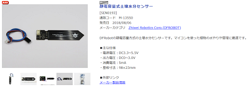
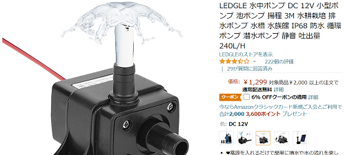
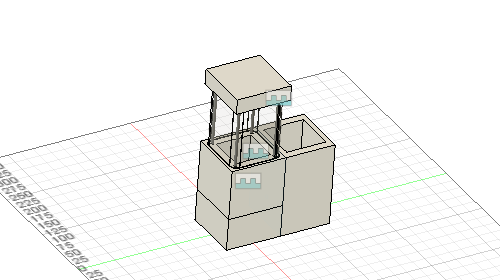

試作品2まではタワー型で水のタンクは上に配置しており不安定であった。下に水タンクを配置することにより安定性を増した。
試作品2では土壌センサーを土の中に入れたままにしておいたところ腐食が進んでしまい、数値がうまく取れないということが起きた。
そこで土壌センサーを変更することにした。
こちらは、腐食に強いということでこれに変更した。

https://akizukidenshi.com/catalog/g/gM-13550/
今までサーボモーターを使用していたが、サーボモーターではうまく制御できず変更することになった。 使用するのは12Vの水中ポンプ用モーターを使用する。

改良モデル

モーターを変更した。
土壌センサーを変更したら数値が前の物よりうまく取れないことが分かった。